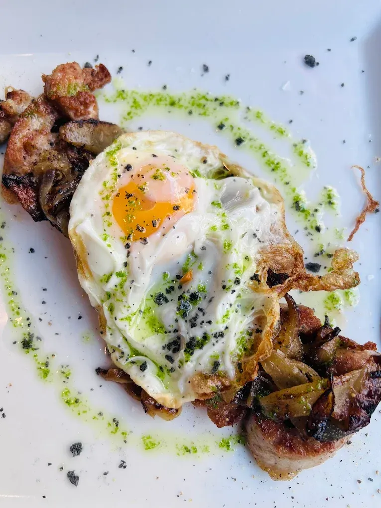
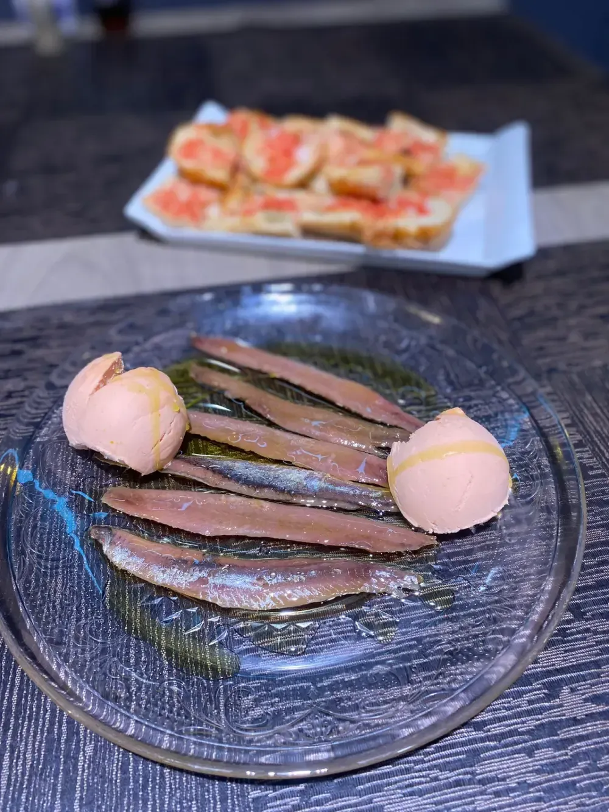
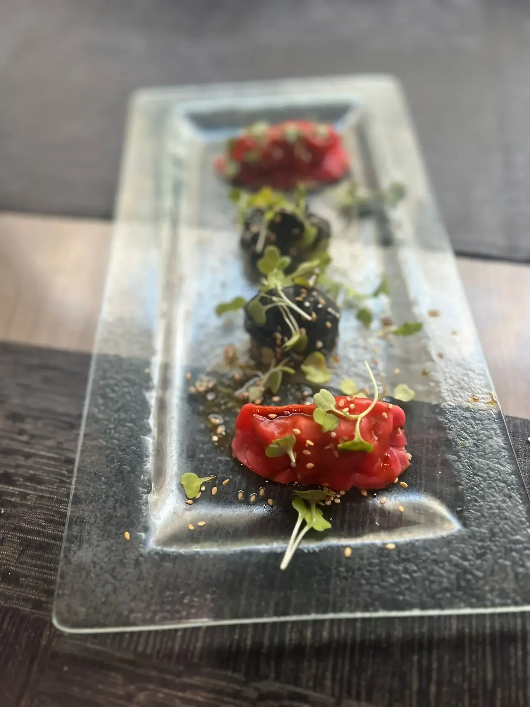
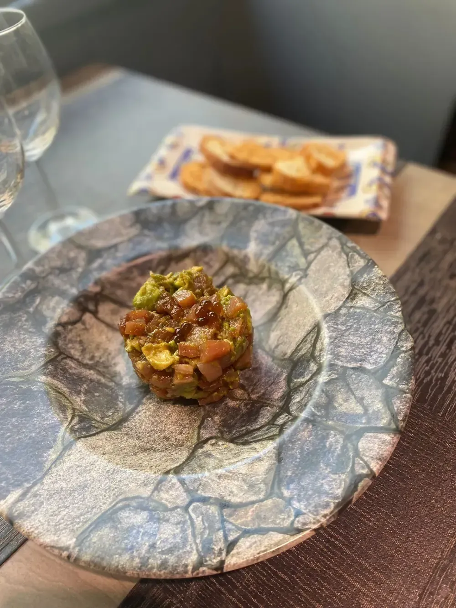
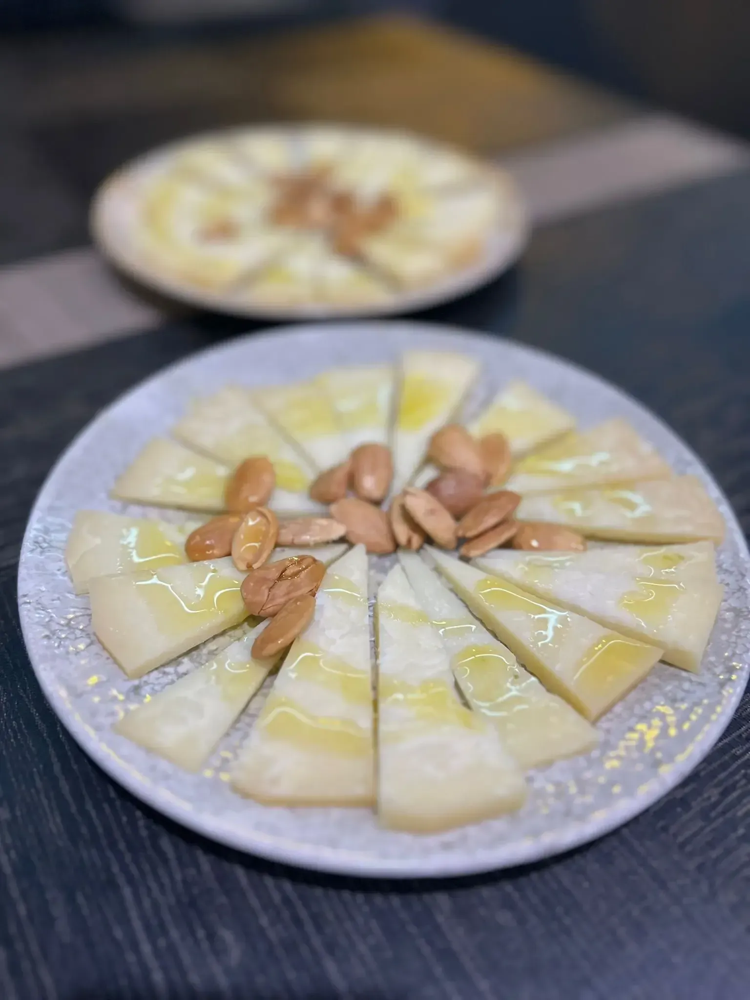
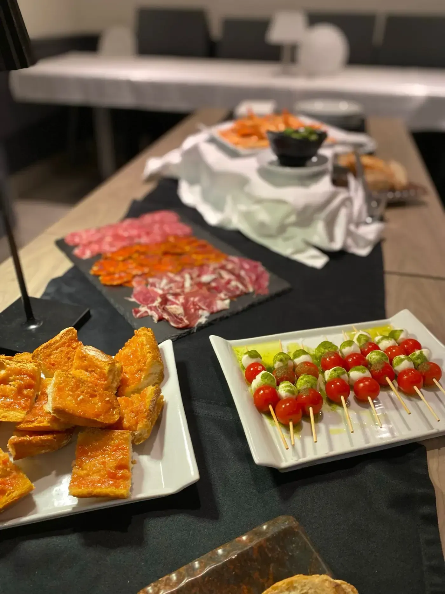

Tapas para compartir, producto de mercado, arroces y nuestro menú del día de lunes a sábado. Con terraza.
Eliges día, hora y comensales y la reserva queda confirmada al momento. Sin llamadas ni esperas, también de noche o en domingo.
Demo: no se guarda ninguna reserva ni se envía ningún mensaje.
Croquetas caseras, bravas, huevos rotos, carnes a la plancha y arroces.





Comidas familiares, cumpleaños, empresas y fechas señaladas como Navidad. Adaptamos la propuesta al número de comensales.
Una selección de la carta y del menú del día, recién preparada. Encárgalo y pásalo a recoger.